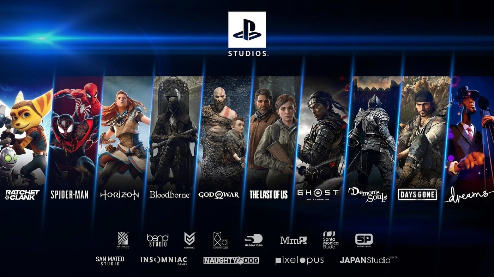

Jogos
PlayStation
Xbox

Os videogames não são importantes apenas para ensinar os jovens a lidar com as frustrações comuns a todos. Eles também têm parte essencial no desenvolvimento cognitivo do cérebro, trabalhando aspectos como a memorização e a coordenação motora. Pesquisas revelaram que jovens saudáveis que jogam videogame com certa frequência podem melhorar as habilidades cognitivas, aumentar a capacidade e velocidade de processamento, tempo de reação, agilidade, entre outros.
O PlayStation (プレイステーション Pureisutēshon?, oficialmente abreviado PS, comumente chamado de PlayStation 1 ou PS1) foi o primeiro console de videogame fabricado pela Sony, lançado em 3 de dezembro de 1994 no Japão, 9 de setembro de 1995 nos Estados Unidos e em 29 de setembro de 1995 na Europa. O desenvolvimento do console começou após uma parceria fracassada com a Nintendo de desenvolver um CD-ROM para seu console Super Nintendo no início dos anos 1990. A produção de jogos para o console foi projetada para ser simplificada e inclusiva, trazendo o suporte de muitas desenvolvedoras terceiras. Em julho de 2000, uma versão melhorada e mais fina chamada de PS One foi lançada, substituindo o console cinza original e nomeado apropriadamente para evitar confusão com seu sucessor, o PlayStation 2. O PlayStation introduziu a Sony para a indústria de jogos eletrônicos. O uso de CDs para o armazenamento dos jogos no console foi uma transição dos cartuchos utilizado por outras empresas de jogos. Desde o seu lançamento até 2006, quando sua produção de jogos foi interrompida, o PlayStation vendeu mais de 100 milhões de unidades.Ocupa a posição de sexto console mais vendido no mundo, com mais de cem milhões de unidades vendidas. Foi sucedido pelo PlayStation 2, que teve mais de 150 milhões de unidades comercializadas.
Xbox é uma marca de consoles de jogos eletrônicos criada pela Microsoft. O nome Xbox é incluído em uma série de consoles desenvolvidos pela Microsoft, desde a sexta geração até a nona geração de consoles, bem como o serviço on-line Xbox Live e Xbox Game Pass. A marca foi introduzida pela primeira vez em 15 de novembro de 2001, nos Estados Unidos, com o lançamento do console Xbox.O primeiro console da série, o Xbox, foi o primeiro console oferecido por uma empresa norte-americana após o Atari Jaguar em 1996. Ele chegou a mais de 24 milhões de unidades vendidas em 10 de maio de 2006. Seu sucessor, o Xbox 360, foi lançado em 22 de novembro de 2005 e descontinuado em 20 de abril de 2016. O sucessor do Xbox 360, o Xbox One, foi anunciado em 21 de maio de 2013 e lançado em 22 de novembro do mesmo ano.
A Nintendo Co., Ltd. (任天堂株式会社 Nintendō Kabushiki Gaisha?) é uma desenvolvedora e publicadora japonesa de jogos eletrônicos e consoles sediada em Quioto. Foi fundada em setembro de 1889 pelo artesão Fusajiro Yamauchi e originalmente era uma fabricante de cartas de baralho tradicionais japonesas. A Nintendo continuou nesse ramo por mais de meio século, no caminho passando por períodos de sucesso e dificuldade, começando a se aventurar em novos negócios a partir da década de 1960. A empresa finalmente entrou no mercado de jogos eletrônicos em 1977 com o lançamento do console Color TV-Game. Seu console seguinte foi o Nintendo Entertainment System, lançado em 1983 no Japão e dois anos depois no resto do mundo. Ele foi um enorme sucesso comercial e popularizou várias franquias da empresa, como Donkey Kong, Super Mario, The Legend of Zelda e Metroid. Ele foi sucedido por outros consoles de sucesso, como Super Nintendo Entertainment System e a linha Game Boy, que reafirmaram a dominância da Nintendo no mercado. Entretanto, a ascensão do PlayStation e depois do Xbox na virada do século fez com que o Nintendo 64 e Nintendo GameCube fossem considerados fracassos comerciais. O fracasso do Wii U fez a companhia desenvolver rapidamente um novo console, o Nintendo Switch, que teve números recordes de vendas ao ser lançado em 2017 e ajudou a recuperar a saúde financeira da Nintendo. A Nintendo e suas produções já receberam diferentes prêmios da indústria de jogos eletrônicos, incluindo em categorias do Game Developers Choice Awards, British Academy Games Awards e The Game Awards. É também uma das empresas japonesas de maior riqueza e valor de mercado, além de possuir uma política de responsabilidade social considerada uma das de melhor reputação do mundo.
No final de 2020, a atual geração de consoles foi lançada. Microsoft e Sony novamente protagonizaram o confronto, seguindo um padrão que é visto há alguns anos na indústria. Enquanto o lado verde da força colocou o Xbox Series X/S no mercado, a Sony ofereceu ao mundo o PlayStation 5. Sendo assim, a nona geração foi iniciada com 3 consoles diferentes, marcando mais uma etapa de um longo embate entre duas grandes marcas. Enquanto isso, a Nintendo segue firme com seu Switch, console da oitava geração, mostrando mais uma vez ter seu próprio tempo. Pouco mais de um ano após o lançamento dos novos consoles, Microsoft e Sony seguem em seu confronto para decidir quem ganha a geração, com novos elementos e serviços podendo ditar o rumo de tudo. Ainda no topo das vendas, o PlayStation vê o Xbox como um oponente cada vez mais grandioso. No artigo, confira todos os consoles da atual geração e saiba mais sobre cada um deles.